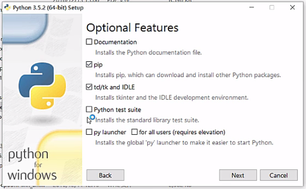
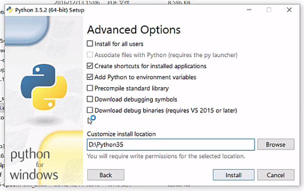
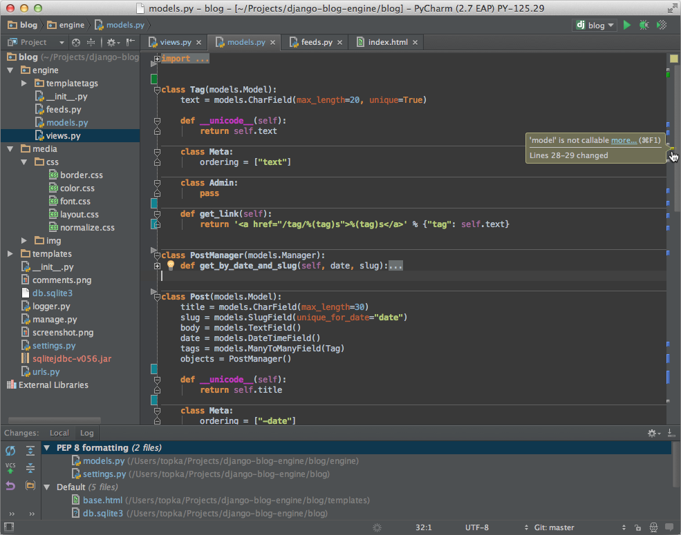

1.1 Python安装和使用
1.1.1 Python环境搭建
- Python可应用于多平台包括Windows、 Linux/Unix 和 Mac OS。
Python下载
- Python最新源码，二进制文档，新闻资讯等可以在Python的官网查看到：
Python官网：http://www.python.org/
你可以在以下链接中下载 Python 的文档，你可以下载 HTML、PDF 和 PostScript 等格式的文档。
- Python文档下载地址：www.python.org/doc/
Unix & Linux 平台安装 Python:(源码式安装)
- 以下为在Unix & Linux 平台上安装 Python 的简单步骤：
- 打开WEB浏览器访问http://www.python.org/download/
- 选择适用于Unix/Linux的源码压缩包。
- 下载及解压压缩包。
- 如果你需要自定义一些选项修改Modules/Setup
- 执行 ./configure 脚本
- make
- make install
- 执行以上操作后，Python会安装在 /usr/local/bin 目录中，Python库安装在/usr/local/lib/pythonXX，XX为你使用的Python的版本号。
通过ubuntu官方的apt工具包安装
$ sudo apt-get install python
$ sudo apt-get install python2.7
$ sudo apt-get install python3.6
Mac安装Python3
$ brew sreach python
$ brew install python3
//在/usr/local/Cellar/这个目录下
Windows下直接下载安装就可以了
安装下载包，一路next，注意选择安装pip


- 为计算机添加安装目录搭到环境变量，如图把python的安装目录添加到pth系统变量中即可。

1.1.2 运行Python
- 有三种方式可以运行Python：
1、交互式解释器：
- 你可以通过命令行窗口进入python并开在交互式解释器中开始编写Python代码。
- 你可以在Unix，DOS或任何其他提供了命令行或者shell的系统进行python编码工作。
$ python # Unix/Linux
或者
C:>python # Windows/DOS
- 以下为Python命令行参数：
| 选项 | 描述 |
|---|---|
| -d | 在解析时显示调试信息 |
| -O | 生成优化代码 ( .pyo 文件 ) |
| -S | 启动时不引入查找Python路径的位置 |
| -V | 输出Python版本号 |
| -X | 从 1.6版本之后基于内建的异常（仅仅用于字符串）已过时。 |
| -c cmd | 执行 Python 脚本，并将运行结果作为 cmd 字符串。 |
| file | 在给定的python文件执行python脚本。 |
2、命令行脚本
- 在你的应用程序中通过引入解释器可以在命令行中执行Python脚本，如下所示：
$ python script.py # Unix/Linux
或者
C:>python script.py # Windows/DOS
3、集成开发环境（IDE：Integrated Development Environment）: PyCharm
- PyCharm 是由 JetBrains 打造的一款 Python IDE，支持 macOS、 Windows、 Linux 系统。
- PyCharm 功能 : 调试、语法高亮、Project管理、代码跳转、智能提示、自动完成、单元测试、版本控制……
- PyCharm 下载地址 : https://www.jetbrains.com/pycharm/download/
